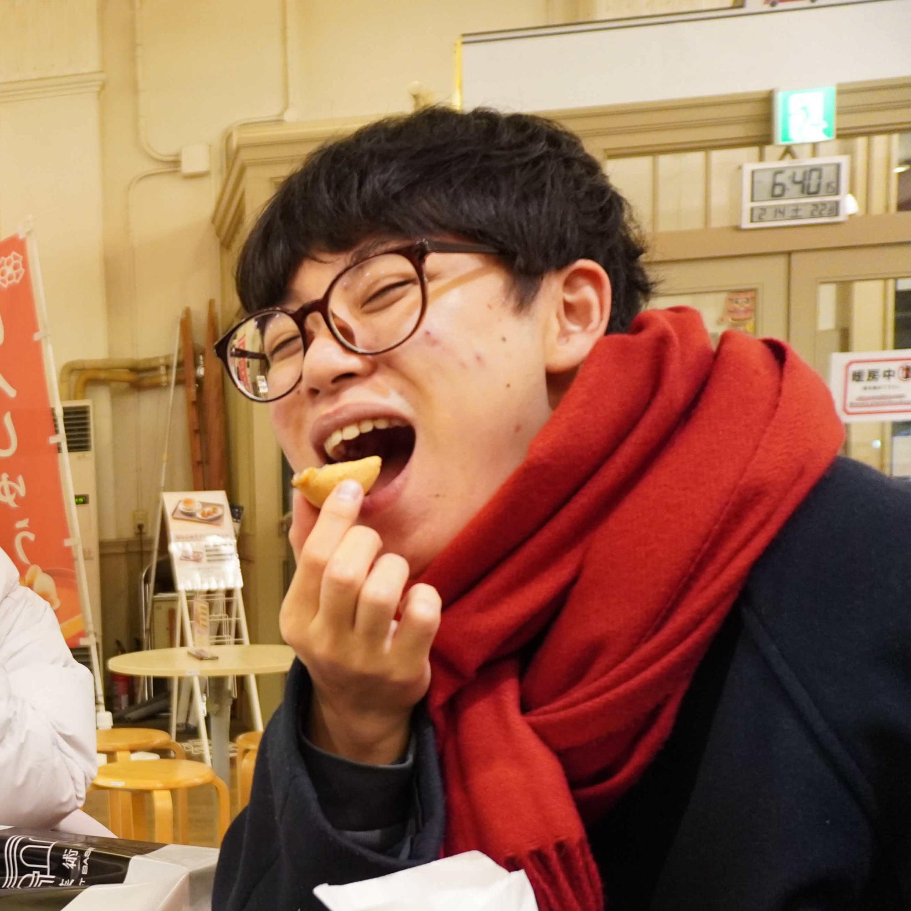

「らくがき」するみたいに、
プログラミングを。
名古屋大学 IdeaStoa を拠点に、AIを駆使した最新のプログラミングスタイル「バイブコーディング」を探究するコミュニティです。
難しいコードを覚える必要はありません。
まるでノートの端に「らくがき」をするように、思いついたアイデアをその場で形にする。
メンバー同士や参加者と一緒に学び合いながら、「なんかできた！」というワクワクを共有しています。
「教える人」と「教わる人」の壁はありません。最新ツールの Antigravity などを実際に触りながら、メンバー全員で知恵を出し合う「学び合い」のスタイルです。今後は、外部からのゲストを招いた勉強会も計画中です。
バイブコーディングの衝撃を体験できるイベントを開催予定！プログラミング未経験でも、AIと一緒に作品を作り上げる楽しさを味わえます。どんなイベントになるか、どうぞお楽しみに。
今、AIの進化で世界がどんどん変わっています。プログラミングもそのひとつ。現場ではAIを使ってコードを書くのが当たり前になり、専門家の中には「もう人間がコードを書かなくてもいい時代だ」と言う人までいます。
でも、ふと周りを見渡すと、その「AIを味方につけて何かを作る方法」を知っている人は、まだまだ少ないのが現状です。
「誰でも作れる時代になったはずなのに、やり方がわからないから手が出せない」
そんなもどかしい状況を変えたくて、らくがきコードは始まりました。
今の時代、ふだん使っているチャットAIに「こんなの作りたい！」と話しかけるだけで、ホームページもゲームも形にできてしまいます。
これまでのプログラミング学習といえば、「この記号を書いて、この文法を覚えて…」といった暗記が中心でした。でも、これからはもっと別のことが大切になるはずです。
私たちは、AI時代に合った、もっと直感的に、もっと「らくがき」みたいに楽しく学べる、新しい教育のカタチを探っていきます。
「一部のメンバーだけで盛り上がっている」場所にはしたくない。
だからこそ、誰でも、いつでも、ふらっと参加できる敷居の低さを大切にしています。
公式Discordでは、バイブコーディングの相談から、自作した作品の自慢、イベント運営の裏側まで、すべてがオープンに。「見るだけ」の参加も大歓迎です。


あなたも、らくがきコードの仲間（めんちゅ）になりませんか？
少しでも興味が湧いたら、まずは以下のフォームから教えてください！